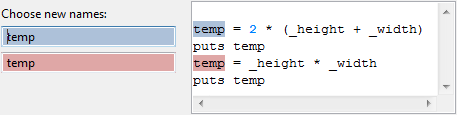

A variable should not be assinged several times in several different places. To split up the usage scopes of the
different values this refactoring helps.
Conditions
The local variable that has to be spilt must be selected with the caret.
Options

Every occurrence of the variable receives a box with its own color. The variable is marked
in the code box with the same color. For every part where the variable has a new value it can
be given a new name.